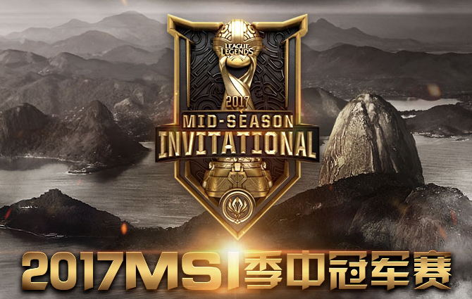
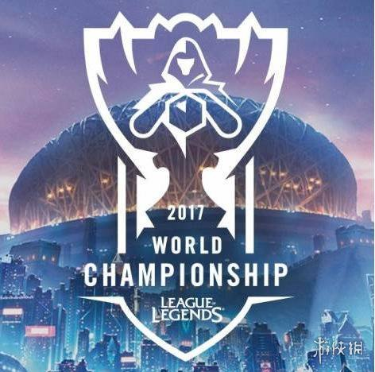
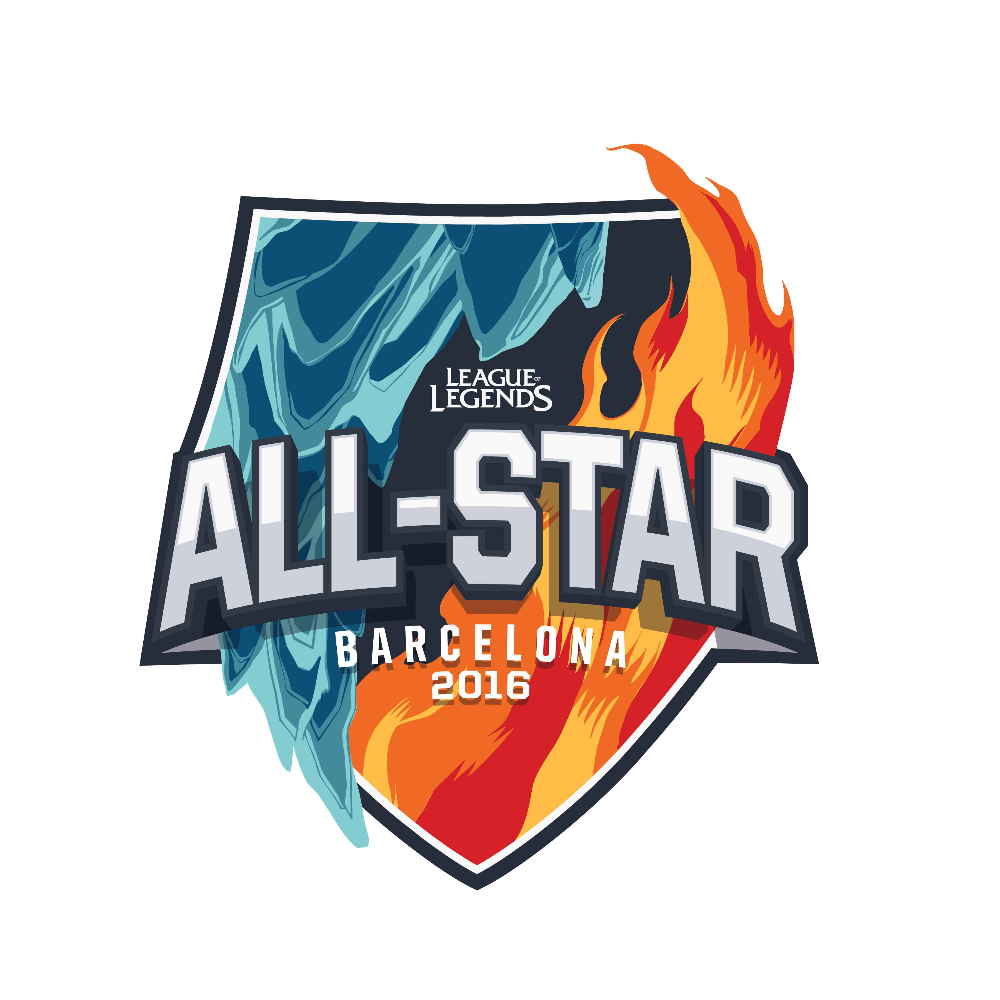

| 季中冠军赛 |

英雄联盟季中冠军赛（Mid-Season Invitational）是拳头公司2015年增加的国际性赛事，
当时的赛事中文名称为季中邀请赛，于2016年后更名 为季中冠军赛。季中冠军赛是英雄联盟当中最重要的国际赛事之一，每个赛区春季赛的季 后赛冠军才能获邀参赛。 |
| 全球总决赛 | 
英雄联盟全球总决赛（ World Championship）是英雄联盟中一年一度的最为盛大的比赛
迄今为止已经举办了S1-S7，一般在每年9月-10月开赛。 参赛者均是来自各大赛区最顶尖水平的战队，只有在每一年的职业联赛中表现出色的队伍 才有资格参赛，每个赛区根据规模和水平决定其在总决赛 当中的名额，全球13个赛区分别是：韩国LCK、港澳台LMS、欧洲LCS、北美LCS、中国LPL、 独联体LCL、巴西CBLOL、东南亚GPL、北拉丁美洲 LLN、南拉丁美洲CLS、土耳其TCL、大洋 洲OPL、日本LJL。 |
| All Star全明星赛 |

英雄联盟全明星赛是拳头游戏于2013年开始举办的大型娱乐赛事，队员均是由各赛区观众
投票选出的明星选手，除了明星队的正赛较量外，还有诸 如克隆模式、无限火力、双人共玩、SOLO赛等等娱乐模式 |